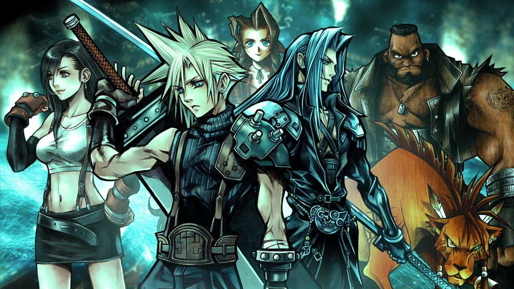

Story
Home
Story
Music
Legacy
Contact
Story: Final Fantasy VII takes place on a world referred to in-game as the "Planet", though it has been retroactively named"Gaia". The planet's lifeforce, called the Lifestream, is a flow of spiritual energy that gives life to everything on the Planet. Its processed form is known as "Mako". On a societal and technological level, the game has been defined as an industrial or post-industrial science fiction milieu. During Final Fantasy VII, the Planet's Lifestream is being drained for energy by the Shinra Electric Power Company (神羅), a world-dominating megacorporation headquartered in the city of Midgar. Shinra's actions are weakening the Planet, threatening its existence and all life. Significant factions within the game include: AVALANCHE, an eco-terrorist group seeking Shinra's downfall so the Planet can recover; The Turks, a covert branch of Shinra's security forces; SOLDIER, an elite Shinra fighting force created by enhancing humans with Mako; The Cetra, a near-extinct human tribe which maintains a strong connection to the Planet and the Lifestream. The central protagonist is Cloud Strife, an unsociable mercenary who claims to be a former 1st Class SOLDIER. Early on, he works with two members of AVALANCHE: Barret Wallace, its brazen but fatherly leader; and Tifa Lockhart, a shy yet nurturing martial artist and childhood friend of Cloud. On their journey, they meet Aerith Gainsborough, a carefree flower merchant and one of the last surviving Cetra; Red XIII, an intelligent quadruped from a tribe that protects the planet; Cait Sith, a fortune-telling robotic cat controlled by repentant Shinra staff member Reeve; Cid Highwind, a pilot whose dream of being the first human in outer space was not realized. The group can also recruit Yuffie Kisaragi, a young ninja and skilled Materia thief; And Vincent Valentine, a former Turk, and victim of Shinra experiments. The game's main antagonists are: Rufus Shinra, son of President Shinra and later leader of the Shinra Corporation; Sephiroth, a former SOLDIER who reappears several years after he was thought dead; And Jenova, a hostile extraterrestrial life-form imprisoned by the Cetra 2000 years before. A key character in Cloud's backstory is Zack Fair, a member of SOLDIER and Aerith's first love. Plot: AVALANCHE destroys a Shinra Mako reactor in Midgar; a attack on another reactor goes wrong, and Cloud falls into the city slums. There, he meets Aerith and protects her from Shinra. Meanwhile, Shinra finds AVALANCHE and collapses part of the upper city, killing most of AVALANCHE along with the slum population below. Aerith is also captured; as a Cetra, she can potentially reveal the "Promised Land", which Shinra believes is overflowing with exploitable Lifestream energy. Cloud, Barret, and Tifa rescue Aerith during their escape from Midgar, they discover that President Shinra was murdered by Sephiroth, who was presumed dead five years earlier. The party pursues Sephiroth across the Planet, with now-President Rufus on their trail. The group begins to encounter Sephiroth during their journey, who continuously appears and disappears after taunting Cloud and sending Jenova-esque monsters after him. Finding him at a Cetra temple, Sephiroth reveals his intentions to use the Black Materia to summon "Meteor", a spell that will hit the Planet with a devastating impact. Sephiroth will absorb the Lifestream as it attempts to heal the wound, becoming a god-like being. The party retrieves the Black Materia, but Sephiroth manipulates Cloud into surrendering it. Aerith departs alone to stop Sephiroth, following him to an abandoned Cetra city. During Aerith's prayer to the Planet for help, Sephiroth attempts to force Cloud to kill her; failing, he kills her himself before fleeing and leaving the Black Materia behind. The party then learns that Jenova is not a Cetra as once thought. Rather, it is a hostile alien lifeform whose remains were unearthed by Shinra scientists decades earlier at Nibelheim, Jenova's cells were used to create Sephiroth. At the Northern Crater, the party learns that the "Sephiroths" they have encountered are Jenova clones created by the insane Shinra scientist Hojo. Confronting the real Sephiroth as he is killing his clones to reunite Jenova's cells, Cloud is again manipulated into delivering the Black Materia. Sephiroth then taunts Cloud by showing another SOLDIER in Cloud's place in his memories of Nibelheim, suggesting that Cloud is a failed Sephiroth clone. Sephiroth summons Meteor and seals the Crater; Cloud falls into the Lifestream and the party is captured by Rufus. Escaping Shinra, the party discovers Cloud at an island hospital in a catatonic state from Mako poisoning; Tifa stays as his caretaker. When the island is attacked by a planetary defense force called Weapon, the two fall into the Lifestream, where Tifa helps Cloud reconstruct his memories: a shy child during his time in Nibelheim, Cloud was blamed when a young Tifa injured herself trying to cross Mt. Nibel. Resolving to become stronger, Cloud leaves for Midgar to join SOLDIER but was never accepted into the organization; the SOLDIER in his memories was his friend Zack. At Nibelheim, Cloud surprised and wounded Sephiroth after the latter's mental breakdown, but Jenova preserved Sephiroth's life. Hojo experimented on Cloud and Zack for four years, injecting them with Jenova's cells and Mako; they escaped, but Zack was eventually killed. The combined trauma of these events triggered an identity crisis in Cloud; he constructed a false persona around Zack's stories and his own fantasies. Cloud accepts his past and reunites with the party, who learn that Aerith's prayer to the Planet had been successful: the Planet had attempted to summon Holy to prevent Meteor's impact, but Sephiroth blocked Holy. Shinra fails to destroy Meteor but manages to defeat a Weapon and puncture the Northern Crater, costing the lives of Rufus and other personnel. After killing Hojo, who is revealed to be Sephiroth's biological father, the party descends to the Planet's core through the opening in the Northern Crater and defeats both Jenova and Sephiroth. The party escapes and Holy is summoned, which destroys Meteor with the help of the Lifestream. Five hundred years later, Red XIII is seen with two cubs looking out over the ruins of Midgar, which are now covered in greenery, showing the planet has healed. Final Fantasy VII characters: Cloud Strife is the main protagonist, introducing himself as a former member of SOLDIER who now operates as a mercenary. Cloud is caught up in the actions of eco-terrorist group AVALANCHE, and although initially uncaring toward their mission, he has a change of heart when he begins to discover his shrouded past. Barret Wallace, the leader of AVALANCHE who wields a gun on his right arm in place of his injured hand. Despite his brash and loud-mouthed personality, he is a caring person and loves his daughter Marlene. Tifa Lockhart, Cloud's childhood friend and member of AVALANCHE, runs the bar 7th Heaven in the Sector 7 slums, which serves as the group's hideout. Her sympathetic exterior hides fearsome fighting skills. Aeris Gainsborough, a flower girl from the Sector 5 Slums who befriends Cloud. Cloud's resemblance to someone she used to know mystifies Aeris, and she joins him and AVALANCHE on their quest to discover more about her heritage. Red XIII is a quadrupedal, flame red beast capable of speech. The party rescues him from capture by Shinra. He speaks little, but when he does, his words are often important. Cait Sith, a robotic cat atop a stuffed Mog, operates as a fortune teller at the Gold Saucer. He shouts commands to his Mog in battle using a megaphone. Cid Highwind, the foul-mouthed, chain-smoking pilot of Rocket Town dreams of being the first man in space. His dreams were foiled when he was forced to abort the mission. Despite his bitter attitude, Cid has a good heart and cares about his friends. Optional characters: Yuffie Kisaragi, first encountered as the Mystery Ninja, can be randomly encountered in any forest. A self-professed Materia hunter, she is sneaky and playful, and "hunts" Materia to restore her home of Wutai to its former glory. Vincent Valentine, discovered sleeping in a coffin at Shinra Mansion in Nibelheim, is a former Turk with a traumatic past. After being subjected to numerous experiments, Vincent became able to transform into monstrous forms, but sealed himself in the coffin due to guilt in his past. Like Red XIII, he speaks little but offers helpful advice when he does. Guest: Sephiroth, is a non-controllable temporary party member during a single sequence. After resurfacing years after being deemed dead, pursuing Sephiroth becomes the party's main motivation.
,